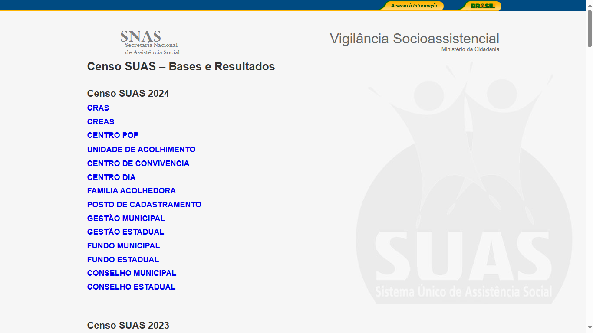

4 Principais instrumentos e fontes de informação para a Vigilância Socioassistencial
Para realizar as atividades propostas, a Vigilância Socioassistencial deve lançar mão de uma grande variedade de fontes e instrumentos de informação. Alguns destes instrumentos são os mesmos para os entes federados, outros, no entanto, são dependentes das particularidades de cada território. A Vigilância Socioassistencial trabalha tanto com dados coletados de forma qualitativa ou quantitativa e de forma primária ou secundária.
4.1 Cadastro Nacional do SUAS - CadSUAS
O CadSUAS consiste em um aplicativo eletrônico – de preenchimento obrigatório (portaria No. 430/2008) – que comporta todas as informações cadastrais dos órgãos gestores de Assistência Social, das unidades públicas e da rede conveniada de entidades prestadoras de serviços socioassistenciais, dos fundos de Assistência Social, dos Conselhos de Assistência Social e dos trabalhadores e conselheiros que atuam no âmbito do SUAS.
A inserção adequada das informações no CadSUAS e sua atualização periódica são fundamentais para a gestão do SUAS, pois o MDS somente reconhece como implantadas as unidades públicas que possuem cadastro no aplicativo. Além disso, esse sistema cadastral está diretamente associado a outros aplicativos extremamente importantes, tais como o Censo SUAS e o Registro Mensal de Atendimentos dos CRAS e CREAS – RMA.
O cadastro no CadSUAS é pré-requisito indispensável para se ter acesso aos questionários do Censo SUAS (realizado anualmente) e a atualização dos dados cadastrais é fundamental uma vez que grande parte dessas informações (endereços das unidades, dados dos trabalhadores, etc.) migra automaticamente para os questionários a serem preenchidos no período do Censo. O RMA também adota essa mesma lógica, pois, somente os CRAS e CREAS cadastrados no CadSUAS possuem formulários disponibilizados para o preenchimento mensal no sistema eletrônico que registra os atendimentos.
O acesso ao CadSUAS é realizado através do link http://aplicacoes.mds.gov.br/cadsuas e para acessar a área restrita do aplicativo (onde são inseridas e atualizadas as informações), os técnicos municipais e estaduais devem utilizar os logins e senhas vinculados ao CPF do indivíduo (senhas do SAA – Sistema de Auten ticação e Autorização), conforme estabelecido pela política de senhas do MDS. O acesso apenas para consulta dos dados gerais do CadSUAS pode ser realizado por qualquer usuário não sendo necessário o uso de senhas de acesso.
4.2 Censo SUAS
O Censo SUAS, insti tuído através do Decreto No. 7.334/2010, é um dos principais instrumentos de avaliação e monitoramento dos serviços, programas e benefí cios ofertados pelo Sistema Único de Assistência Social. Sua realização é feita todos os anos, desde 2007, por meio de questionários que são respondidos exclusivamente através de um aplicativo eletrônico.
Os dados coletados através destes questionários fornecem um diagnóstico detalhado e atualizado dos equipamentos da rede socioassistencial nas suas dimensões de infraestrutura, serviços, recursos humanos, articulação, dentre outras. Atualmente compõem o núcleo central do Censo SUAS um conjunto de sete questionários referentes às unidades CRAS, CREAS, CREAS Regional, Centro POP, Gestão Municipal, Gestão Estadual e Conselhos de Assistência Social.
Além desse conjunto, também pode ser incorporado questionários “extras”, ou seja, que não são adotado todos os anos (por exemplo, em 2011 foi realizado o Censo das entidades privadas prestadoras de serviços socioassistenciais e, em 2012 o Censo das unidades de acolhimento).
A partir das informações do Censo SUAS é possível definir indicadores dimensionais, índices de desenvolvimento e patamares mínimos anuais para as unidades públicas que ofertam serviços de proteção social básica e de proteção social especial, assim como para as unidades de gestão e de controle social. Diante disso, o Censo é o principal instrumento da Vigilância Socioassistencial no que diz respeito aos padrões de serviços ofertados pelo SUAS. Atende, primordialmente, a atividade de Monitoramento e Avaliação, e também pode ser utilizado para auxiliar nas ações voltadas para a Organização, Estruturação e Padronização da Informação e Diagnósticos Socioassistenciais. É função da Vigilância zelar pelas informações prestadas no aplicativo nacional, auxiliar no entendimento das questões, acompanhar o processo de preenchimento, analisar os resultados e lançar mão dessas informações com a finalidade de subsidiar o planejamento e as ações do SUAS.
Anualmente o Censo SUAS é realizado durante o segundo semestre do ano (agosto ou setembro) e permanece aberto para preenchimento, em média, por 4 meses. Os questionários e os manuais de preenchimento podem ser acessados através do link https://aplicacoes.mds.gov.br/sagi/snas/vigilancia/index2.php. Para realizar o preenchimento dos questionários é necessário utilizar os logins e senhas vinculados ao CPF do indivíduo (senhas do SAA – Sistema de Autenticação e Autorização), conforme estabelecido pela política de senhas do MDS (perfil: cadsuas.municipio).
Vale ressaltar que Censo SUAS é a forma dos municípios ou estados demonstrarem a implantação das unidades socioassistenciais, bem como a oferta regular dos serviços (cofinanciados ou não pelo MDS). Diante disso, se não há o preenchimento do Censo SUAS, o MDS entende que a unidade não está em funcionamento, portanto, a unidade é “inativada” no CADSUAS e o repasse de recurso pode ser suspenso. Outro efeito do não preenchimento do Censo SUAS está relacionado aos recursos do IGDSUAS, pois no cálculo do IGD é levado em conta o Indicador de Desenvolvimento do CRAS (ID-CRAS) e, portanto, se não foram fornecidas as informações referentes ao CRAS não é possível realizar esses cálculos, o que impacta negativamente no IGDSUAS.

4.3 Registro Mensal de Atendimentos - RMA
Este aplicativo refere-se à Resolução CIT nº 4, de 24 de maio de 2011, que instituiu parâmetros nacionais para o registro das informações relativas aos serviços ofertados nos Centros de Referência da Assistência Social - CRAS nos Centros de Referência Especializados da Assistência Social - CREAS, e definiu o conjunto de informações que devem ser coletadas, organizadas e armazenadas pelas referidas unidades, em todo o território nacional.
Assim como o Censo SUAS, é um instrumento da Vigilância sobre o Padrão de Serviços, atendendo às atividades de Monitoramento e de Organização, Estruturação e Padronização das Informações.
O Registro Mensal de Atendimentos – RMA (acesso pelo link: http://aplicacoes.mds.gov.br/sagi/atendimento) é o principal instrumento de aferição da demanda assistida nos CRAS e CREAS, na medida em que a análise das suas informações permite dimensionar/ quantificar o tipo, volume e padrões de qualidade dos serviços ofertados pela rede socioassistencial. Ele se divide em 2 (dois) tipos de registros distintos – RMA- Unidade e o RMA- Família.
O RMA-Unidade (formulário I) compreende os dados mensais (agregados) relativos ao número de famílias em acompanhamento no PAIF (ou PAEFI, no caso das unidades CREAS) e, dentre essas, o respectivo perfil (extrema pobreza, famílias beneficiárias do Programa Bolsa Família, etc.), bem como, no caso do CRAS, o número de atendimentos individualizados ou coletivos, e ainda, no caso do CREAS, o número de atendimentos no âmbito do PAEFI por situação de violência e/ou violação de direitos. Esses dados deverão ser informados mensalmente no prazo de até 30 dias subsequentes ao mês de referência das informações, contando-se ainda de um período adicional de mais 30 dias, durante o qual os municípios poderão solicitar o apoio técnico das respectivas gestões estaduais.
O RMA Família (formulário II) permite acompanhar, de forma individual (por família), todos os atendimentos e consequentes encaminhamentos realizados nas unidades CRAS e CREAS no âmbito do PAIF e PAEFI, respectivamente. Este sistema possibilita também a consulta por nome ou NIS do usuário das informações a ele relativas, conforme o seu cadastro no CadÚnico.
Assim como o Registro Mensal de Atendimentos (RMA), o Prontuário está ancorado na ideia de registrar e organizar as informações dos CRAS e CREAS. Para cada Prontuário aberto é realizado um registro RMA-Família, ou seja, os dois instrumentos serão parceiros no processo de ampliar e qualificar o histórico do trabalho social com as famílias acompanhadas.
De salientar ainda que é função da Vigilância zelar pelas informações prestadas no aplicativo nacional, auxiliar no entendimento das questões e acompanhar o processo de inserção das informações nos sistemas RMA.
4.4 Prontuário SUAS
Segundo seu manual, o Prontuário SUAS é um instrumental técnico que visa auxiliar o trabalho dos profissionais, organizando as informações indispensáveis à realização do trabalho social com as famílias e registrando o planejamento e o histórico do acompanhamento familiar. Assim, o Prontuário SUAS tem como objetivo principal contribuir para a qualificação do processo de acompanhamento familiar nos CRAS e CREAS. Através do site do MDS, é possível baixar arquivo em PDF do instrumental e documentos de referência. (link: http://www.mds.gov.br/assistenciasocial/vigilancia-socioassistencial%20/prontuario-suas).
Além do estudo social realizado com as famílias ou indivíduos, o Prontuário SUAS possibilita a identificação das ações desenvolvidas, incluindo os encaminhamentos realizados, o processo de evolução, a avaliação das ações promovidas e os resultados alcançados, registrando adequadamente a relação do usuário com as unidades.
O Prontuário é um formulário em papel que deve ser preenchido para cada família que entra em acompanhamento. Toda família inserida em acompanhamento no Registro Mensal de Atendimentos deve possuir um Prontuário. Futuramente, o aplicativo eletrônico do Prontuário também será disponibilizado.
Portanto, é função da Vigilância nos municípios e estados: auxiliar a implantação do Prontuário SUAS nas unidades, auxiliar no entendimento conjunto das questões e conceitos contidos no instrumental, fazer a adequação de instrumentos já existentes caso necessário e orientar sobre a guarda do Prontuário e sigilo das informações contidas nele. A Vigilância pode, também, orientar técnicos de CRAS e CREAS na elaboração de relatórios mensais, semestrais e anuais sobre o volume e perfil do atendimento realizado por estas unidades.
O Prontuário é um instrumento que promove a “Organização, Estruturação e Padronização de Informações” nas unidades de CRAS e CREAS e está dentro do escopo da Vigilância de Riscos e Vulnerabilidade.
4.5 CadÚnico e CECAD
O CECAD é uma ferramenta que permite realizar, de modo fácil e rápido, consultas, tabulações e extrações de dados do Cadastro Único para Programas Sociais do Governo Federal – Cadúnico que inclui as famílias com renda mensal de até meio salário mínimo por pessoa ou de três salários mínimos no total, além de famílias cadastradas em outros programas sociais. Ele possibilita conhecer a realidade socioeconômica dessas famílias, trazendo informações do domicílio e também dados de cada um dos componentes da família.
O Cadúnico, por meio da ferramenta CECAD, se torna uma solução viável para identificar as principais vulnerabilidades da população em determinado território (ao nível de bairro, município ou estado), conhecer a realidade socioeconômica das famílias, acessar informações sobre as características do domicílio, o acesso a serviços públicos, entre outras informações. Com isso, se constitui um instrumento primordial para o planejamento e execução de ações de Vigilância Socioasistencial, uma vez que permite quantificar a demanda potencial por serviços socioassistenciais, assistindo, assim, às tarefas de elaboração de diagnósticos socioassistenciais e de planejamento e apoio aos processos de busca ativa pelos serviços socioassistenciais.
Os dados do CadÚnico podem ser trabalhados estatisticamente para caracterização dos territórios e também, de forma detalhada (relatórios/planilhas analíticas) com informações indivídualizadas por “pessoas” ou “famílias”, possibilitando a extração de listagens territorializadas com nomes e endereços, facilitando assim ações de busca ativa de públicos prioritários da Assistência Social que já estejam cadastros no CadÚnico.
O acesso ao CECAD é possível pelo link: http://aplicacoes.mds.gov.br/sagi/cecad/auth/index.php e também por meio do Sistema de Registro Mensal de Atendimentos - RMA http://aplicacoes.mds.gov.br/sagi/atendimento. Para acesso é necessário que os usuários possuam a senha da Rede Suas com perfil cadsuas.município.
4.6 IDV - Sistema de Identificação de Domicílios em Vulnerabilidade
O IDV é um aplicativo que permite a elaboração de mapas de vulnerabilidade e risco social ao nível de estados, municípios e por setor censitário (áreas demarcadas pelo IBGE, de tamanho menor que municípios), de acesso público e irrestrito (sem utilização de senha) pelo link: http://aplicacoes.mds.gov.br/sagi/idv/. Entre outros, utiliza dados e indicadores coletados a partir do Censo Demográfico de 2010, Cadastro Único de Programas Sociais (situação em agosto de 2011) e CENSO SUAS.
A visualização na forma de mapas ressalta a perspectiva de território, o que confere ao IDV um papel importante na produção de diagnósticos socioassistenciais, ao reunir, em simultâneo, por um lado, informações relativas a dados e indicadores de vulnerabilidade e risco social e grupos populacionais específicos e, por outro lado, informações relativas às unidades prestadoras de serviços socioassistenciais (CRAS , CREAS e entidades da rede privada), escolas, unidades do sistema nacional de emprego SINE-MTE, etc. Desta forma, possibilita várias análises, como por exemplo, dimensionar e localizar territórios com maior concentração de famílias em situação de vulnerabilidade e menor número de equipamentos de referencia da Assistência Social ou das demais políticas públicas.
4.7 Matriz de Informações Sociais e Relatórios de Informações Sociais (MI-SAGI e RI-SAGI)
O MDS disponibiliza uma série de informações que podem ser utilizadas tanto pela Vigilância de Riscos e Vulnerabilidades quanto pela Vigilância de Padrões de Serviços, são exemplos: o Data Social, a Matriz de Informações Sociais, o Relatório de Informações Sociais, o Sistema Brasil Sem Miséria, aplicativos relacionado a expansão e monitoramento dos serviços, entre outros (acesso pelo link http://aplicacoes.mds.gov.br/sagi).
A Matriz de Informação Social (MI Social), por exemplo, é uma ferramenta que reúne em um único local as informações oriundas de diferentes aplicativos e, dessa forma, permite realizar, através de indicadores gerenciais, o monitoramento dos programas, projeto e ações desenvolvidos pelo MDS. Esse aplicativo possibilita a construção de tabelas e gráficos a partir das informações escolhidas pelo próprio usuário.
A Matriz de Informação Social disponibiliza os dados de diferentes formas, isto é, podem ser visualizados os dados por município, por UF, ou até mesmo por áreas especiais (tais como, a região do Semiárido ou da Bacia do Rio São Francisco). O acesso às informações da MI Social pode ser realizado por qualquer usuário não sendo necessário o uso de senhas de acesso. O endereço de acesso é http://aplicacoes.mds.gov.br/sagi/mi2007/home/index.php.
Outra ferramenta que fornece informações para subsidiar as ações de gestão do SUAS é o Relatório de Informações Sociais (RI). Esse aplicativo fornece somente informações por município, ou seja, não é possível realizar consultas por estado ou por região.
Os relatórios gerados pelo sistema apresentam dados demográficos dos municípios e indicadores relacionados às ações de Assistência social (programas de transferência de renda, segurança alimentar e nutricional, inclusão produtiva, etc.). Além disso, os usuários também podem acessar boletins sintéticos que mostram, por exemplo, uma análise do seu município em relação ao mercado de trabalho, à extrema pobreza, inclusão produtiva e outros.
A Matriz de Informações Sociais pode ser acessada pelo link http://aplicacoes.mds.gov.br/sagi/RIv3/geral/index.php e qualquer usuário pode obter as informações não sendo necessário o uso de senhas de acesso.
4.8 SUASWEB - Informações do cofinanciamento federal
O SuasWeb é uma ferramenta criada para agilizar a transferência regular e automática de recursos financeiros do Fundo Nacional de Assistência Social (FNAS) para os fundos estaduais, municipais e do Distrito Federal. Compreende informações sobre contas-correntes, saldos, repasses e cadastros. Traz, ainda, os Planos de Ação e os Demonstrativos Sintéticos de Execução Físico-Financeira.
Estes dados ajudam a refletir sobre o volume e tipo de serviços, podendo compor indicadores de Padrão de Serviços.
4.9 Outras fontes de dados estatísticos oficiais
Ainda é possível trabalhar outras fontes de informação, tanto as propostas pela própria Vigilância, como as produzidas por instituições de pesquisa local, outras secretarias de políticas setoriais, por órgãos públicos e uma infinidade de outras fontes.
A própria Coordenação de Vigilância ou proteções podem ser responsáveis pela coleta de informações específicas a cada localidade. Fazer os levantamentos necessários para exercer as atividades definidas como suas.
As bases de dados do IBGE são exemplos de fontes riquíssimas. O Censo Demográfico é um levantamento minucioso de todos os domicílios do país, que ocorre de 10 em 10 anos. Através do Censo é possível obter um grande número de informações socioeconômicas, que ajudam no planejamento local, assim como, trabalhar com informações inframunicipais.
A Pesquisa Nacional por Amostra por Domicílio – PNAD – também possui informações socioeconômicas da população. Ocorre de forma anual, mas suas informações só são desagregáveis por Estado, ou, no mínimo, para Regiões Metropolitanas. Há também a Pesquisa do Perfil dos Municípios e Estados Brasileiros, a Pesquisa de Entidades de Assistência Social, a Pesquisa de Orçamento Familiar, entre muitos outros dados.
Exemplo de informações intersetoriais, são o Disque 100 (Disque Denúncia Nacional) e o SINAN (Sistema de Informação de Agravos de Notificação - DataSUS – Notificação de Violências).
Além destas, há muitas pesquisas e estudos específicos realizados nos mais diversos contextos, trabalhos acadêmicos, entre outas fontes de informação. A Vigilância pode e deve utilizar as informações que achar necessário para o exercício de suas atividades.